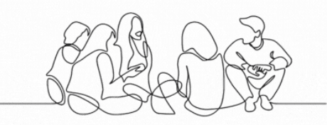
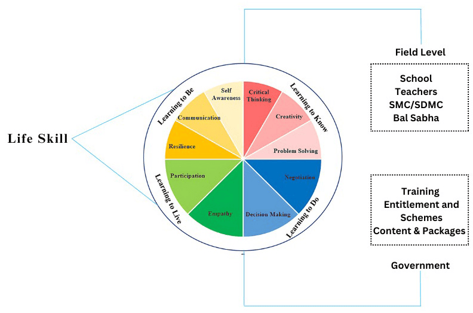
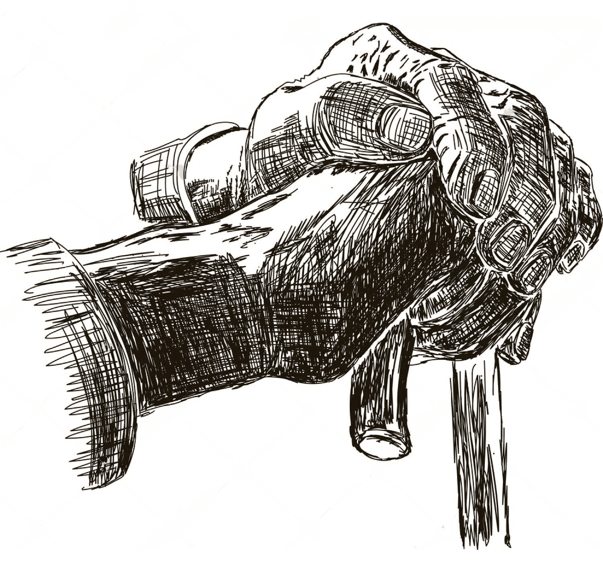
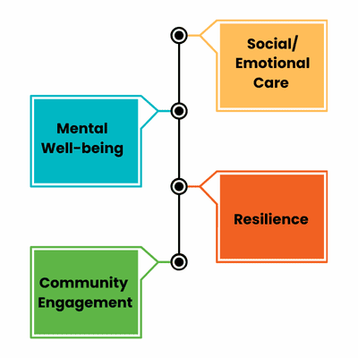

India has the largest adolescent population in the world, with 253 million individuals, meaning one in every five people is between 10 and 19 years old (MHFW). The country stands to gain socially, politically, and economically if these adolescents are kept safe, healthy, and educated, and are equipped with the information and life skills necessary to support ongoing national development.
Both adolescent girls and boys often lack access to critical information on issues impacting their lives and have limited opportunities to develop the competencies necessary for active participation. Adolescent girls, in particular, face heightened vulnerability due to harmful social norms that devalue them, which restricts their freedom and impairs their ability to make decisions about their education, work, marriage, and social relationships.
Our focus is on enhancing their participation in career choices, life decisions, and access to essential services in health, education, and safety. High dropout rates among girls before completing secondary education are often due to household responsibilities, child marriage, child labor, and inadequate sanitation facilities at schools. Child marriage, a deeply ingrained social norm, starkly highlights widespread gender inequality and discrimination. Adolescent girls who become pregnant face increased risks of maternal and new-born health complications and mortality.
The goal is to institutionalize adolescent participation through formal platforms at the block, district, state, and national levels, as well as through informal youth-led networks. To strengthen this participation, it is essential that both girls and boys are equally involved. Engaging peer support leaders is crucial for effective adolescent participation and skill development. Additionally, efforts will focus on providing adolescents with opportunities to develop employable skills, both within and outside of school settings.


The world’s population is living longer and aging more rapidly, presenting one of the greatest social challenges of the 21st century. While India currently has the largest youth population, it is also experiencing a swift increase in its elderly demographic. The number of individuals aged 60 and above, currently at 153 million, is projected to soar to 347 million by 2050. This demographic shift represents more than just a statistic; it signifies a profound societal transformation with extensive and far-reaching implications.
Aging is a multifaceted and complex issue. The United Nations Decade of Healthy Ageing (2021–2030) acknowledges that aging impacts not only health systems but also labor and financial markets, social protection, and education, among other areas. Researchers are increasingly focusing on healthy aging beyond conditions like dementia and cognitive decline. While studies explore general health, family history, and psychosocial aspects, there is a critical need for improved, targeted, and community-based integrated care approaches.
These approaches should be designed around the needs of older adults and include effective coordination and long-term care systems. Although the Government of India's National Policy on Older Persons (1999), the Maintenance and Welfare of Parents and Senior Citizens Act (2007), and the National Policy for Senior Citizens (2011) establish a legal framework to support the needs of seniors, additional measures are also in place.
The National Programme for Health Care of Elderly and Health and Wellness Centres under the Ayushman Bharat programme offer dedicated healthcare services for the elderly at primary healthcare settings.

The organization focuses on enhancing participation and amplifying voices in the areas of health and social care to promote mental well-being. We work to connect individuals with government schemes and provide advocacy and awareness on rights and policies affecting older adults. Our role is to act as a bridge between the community and the government, improving transparency, engagement, and the quality of programs and policies.
